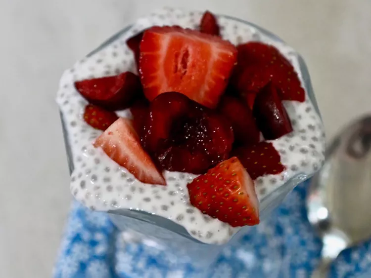

Greek Yogurt Chia Pudding recipe

Ingredients
- 1 (5.3 ounce) containervanilla Greek yogurt
- 2/3 cup milk
- 2 tablespoons chia seeds
- 1/2 tablespoon honey, or more to taste
- 1 cup chopped fresh fruit
Steps
- Whisk Greek yogurt, milk, chia seeds, and honey together in a small bowl until well blended.
- Cover and refrigerate overnight.
- Before serving, stir to redistribute any seeds that may have settled. Top with your favorite fruit and enjoy!
Back